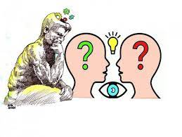
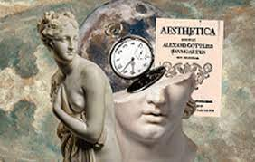
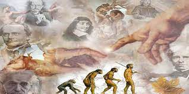

Tipos de filosofía
Metafísica:Se ocupa de la naturaleza fundamental de la realidad y de preguntas como la existencia, la causalidad, el tiempo y el espacio. |
|
Epistemología:Examina la naturaleza, el origen y los límites del conocimiento. Se centra en preguntas sobre la verdad, la creencia, la justificación y la certeza. |
|
Ética:Aborda cuestiones relacionadas con el bien y el mal, la moralidad y la toma de decisiones éticas. Se divide en ética normativa (qué es moralmente correcto) y ética aplicada (cómo aplicar principios éticos a situaciones específicas). |
 |
Estética:Se enfoca en la naturaleza de la belleza, el arte y la apreciación estética. Examina preguntas sobre el gusto, la creatividad y la interpretación artística. |
 |
Filosofía Política:Explora cuestiones relacionadas con el gobierno, la autoridad, la justicia, la libertad y los derechos. Examina diferentes teorías políticas y modelos de organización social. |
|
Filosofía de la Mente:Investiga la naturaleza de la mente, la conciencia, la cognición y la relación mente-cuerpo. Examina preguntas sobre la percepción, el pensamiento y la identidad personal. |
|
Filosofía de la Ciencia:Se centra en cuestiones relacionadas con la naturaleza y el método de la ciencia. Examina conceptos como la verdad científica, la evidencia, la explicación y la relación entre la ciencia y la realidad. |
 |
Filosofía de la Religión:Aborda preguntas sobre la existencia de Dios, la naturaleza de la fe, el problema del mal y la relación entre la religión y la razón. |
|
Existencialismo:Una corriente filosófica que destaca la libertad individual, la responsabilidad personal y la importancia de la elección en la creación de significado en la vida. |
Hay muchas otras corrientes y enfoques filosóficos. La filosofía es una disciplina dinámica que continúa evolucionando con nuevas preguntas y desafíos a medida que la sociedad y la cultura cambian.